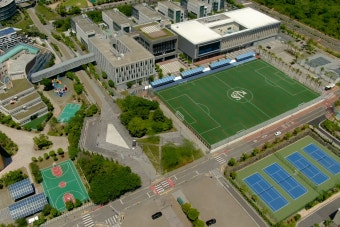

1. 지역별 주요 국제학교
· 제주 (영어교육도시)
NLCS 제주(영국계·IB), 브랭섬홀 아시아(BHA)(IB), KIS 제주(미국식·AP), 세인트존스베리 아카데미(SJA) 제주(미국식). 내국인도 제한 없이 입학 가능해 경쟁이 치열합니다.
· 인천 송도
채드윅 송도국제학교(IB). 인천 지역 국제학교의 대표 주자입니다.
· 서울
서울외국인학교(SFS), 용산국제학교(YISS), 덜위치칼리지 서울(영국계·IB), 드와이트 외국인학교(IB), 서울일본인학교, 서울독일학교(DSSI), 서울프랑스학교(LFS) 등.
· 대전 · 대구 · 부산 · 기타
대전외국인학교(TCIS)(IB), 대구국제학교(DIS), 부산국제외국인학교(BIFS)(IB), 국제크리스천학교 평택(ICS), 경기수원외국인학교(SIS) 등.

대전외국인학교 (TCIS)
2. 지원 자격부터 확인하세요
· 제주 영어교육도시 국제학교 — 내국인 입학 제한이 없습니다. 그래서 경쟁이 가장 치열합니다.
· 외국인학교(SFS·YISS 등) — 외국 국적이거나 해외 거주 경력(보통 3년 이상) 요건이 있는 경우가 많습니다. 지원 전에 반드시 자격을 확인하세요.
· 학교별 정원 — 인기 학교는 대기자가 있어 최소 6개월~1년 전부터 준비해야 합니다.
3. 커리큘럼 — IB가 많지만 학교마다 다릅니다
· IB — NLCS 제주, 브랭섬홀, 채드윅 송도, 덜위치 서울, TCIS, BIFS 등. PYP → MYP → DP. 고등에서 IB Math AA/AI 선택, 내부평가(IA)·확장에세이(EE)·TOK가 점수의 큰 축.
· 미국식·AP — KIS 제주, SJA 제주, YISS, SFS 등. 알지브라 → 지오메트리 → 알지브라 2 → 프리캘큘러스 → AP 미적분. GPA 누적.
· 영국계·IGCSE/A-Level — 덜위치 서울, NLCS 제주 일부 과정.

부산 지역 국제학교
4. G1~G12 학년별 준비 로드맵
영어 파닉스·리딩과 기초 수학 영어 용어. 입학을 준비한다면 이 시기 영어 인터뷰(간단한 대화)와 리딩 능력이 평가됩니다.
라이팅(문단 쓰기) 시작, 수학은 분수·소수·비율 등 프리알지브라 기초. 입학시험에서 영어 에세이가 본격적으로 등장하는 시기입니다.
알지브라(Algebra)·지오메트리(Geometry) 시작. IB 학교는 MYP. 영어는 에세이 구조(주제문·근거·예시) 훈련. 이 시기 수학 구멍은 고등에서 반드시 터집니다.
미국식은 GPA 누적 시작, IB는 DP 과목 선택 준비, 영국계는 IGCSE. 수학은 알지브라 2·프리캘큘러스, 과학은 물리·화학·생물 분화.
IB DP / AP / A-Level 본과정. IB 수학 IA·확장에세이(EE), AP 미적분·AP 과학, SAT/ACT, 대학 지원 에세이·인터뷰. 1:1 관리가 가장 필요한 시기입니다.
5. 과목별 준비 방법 — 전 과목 관리
프리알지브라 · 알지브라(Algebra) 1·2 · 지오메트리(Geometry) · 프리캘큘러스 · 미적분(Calculus) · AP Calculus AB/BC · AP 통계 · IB Math AA/AI(HL·SL) · IGCSE/A-Level Maths · 입학 배치고사 대비. 영어 용어와 서술형 풀이를 함께 잡습니다.
리딩 · 에세이 라이팅·첨삭 · 문학(Literature) 분석 · IB English A/B · 확장에세이(EE) · AP English · SAT/ACT · 입학 에세이 · 면접(인터뷰) 대비 · 디베이트.
물리·화학·생물 (IB Physics/Chemistry/Biology, AP, IGCSE Science). 개념+영어 용어, 랩 리포트와 과학 IA 관리.
중국어(IB Chinese B), 스페인어, 한국어(IB Korean A). 경제·경영, 컴퓨터과학. 국내 학생은 국어·한국사 병행 관리도 가능합니다.

제주영어교육도시 국제학교
6. 입학시험 준비 — 가장 중요한 3가지
· 수학 배치고사 — 알지브라·지오메트리 범위에서 영어 지문으로 출제됩니다. 한국에서 수학을 잘하던 아이도 영어 용어(coefficient, denominator, slope, factor 등)를 모르면 점수가 안 나옵니다. 아는 개념에 영어 이름표를 붙이는 작업이 가장 빠른 준비입니다.
· 영어 에세이 — 자기소개형·의견형·경험형 문항. 화려한 문장보다 주장 → 근거 → 예시 → 마무리 구조가 점수를 만듭니다. 유형별 뼈대를 만들고 첨삭으로 다듬으세요.
· 면접(인터뷰) — 학생 면접과 학부모 면접이 함께 있는 경우가 많습니다. 영어 유창성보다 생각을 정리해 말하는 능력을 봅니다. 답변을 통암기하면 꼬리 질문에 무너지므로, 결론 → 이유 → 예시 구조로 훈련하세요.
· 준비 기간 — 최소 3~6개월. 인기 학교는 1년 전부터 준비하는 가정도 많습니다.
7. 입학 후가 진짜 시작입니다
많은 학부모님이 입학만 하면 끝이라고 생각하시지만, 실제로는 입학 후 첫 학기가 가장 힘듭니다. "영어 환경에 있으니 알아서 늘겠지" 했다가 수학 시험에서 문제를 못 읽어 무너지는 경우가 정말 많습니다. 회화가 되는 것과 학업 영어는 다릅니다. 입학 직후 알지브라 영어 용어와 에세이 구조를 함께 잡아두면 초기 적응이 완전히 달라집니다.